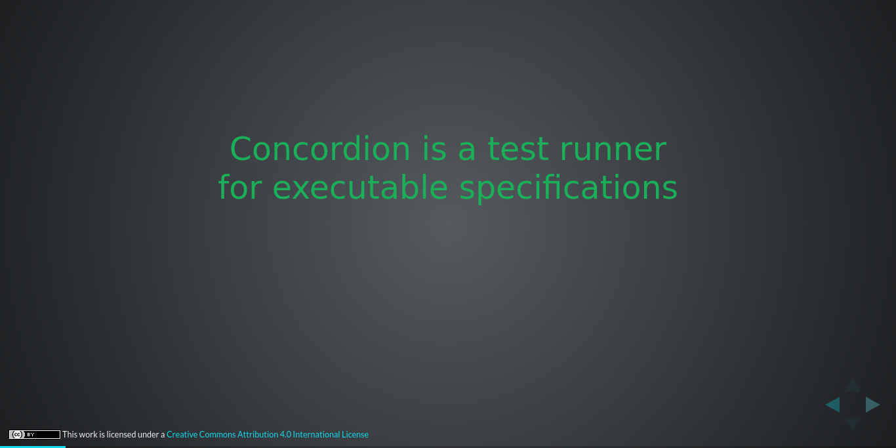
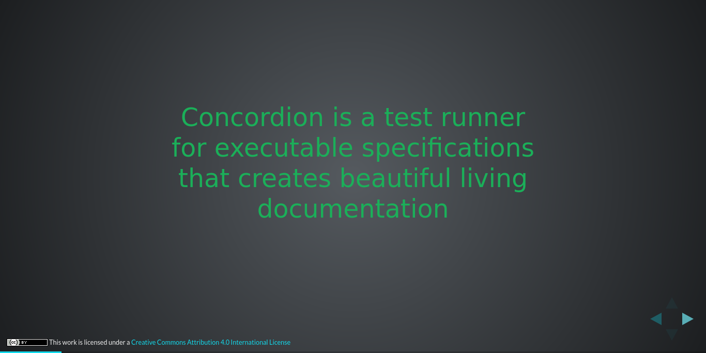
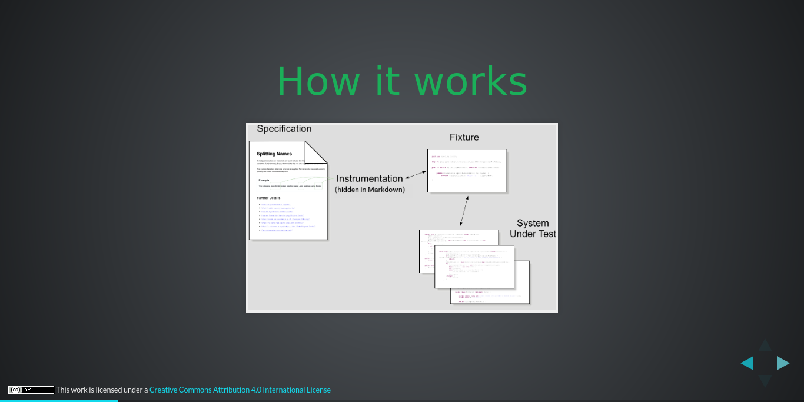
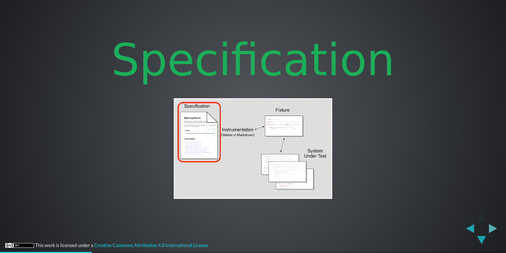
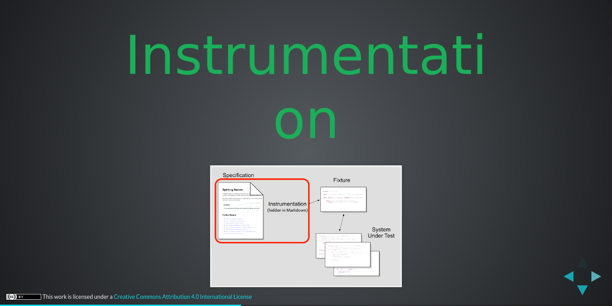
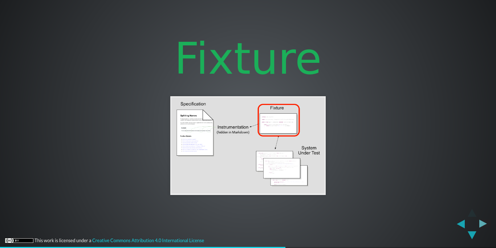
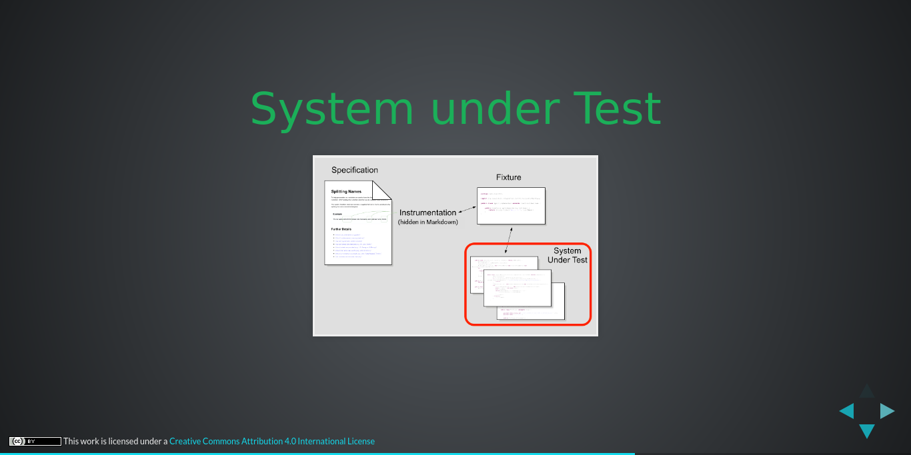
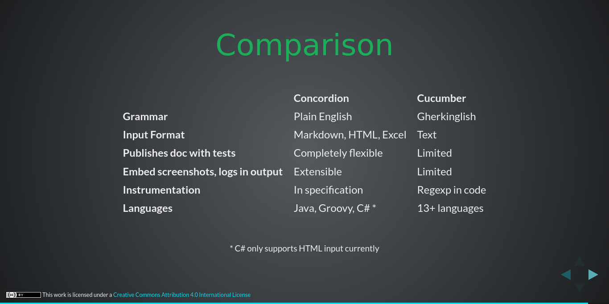
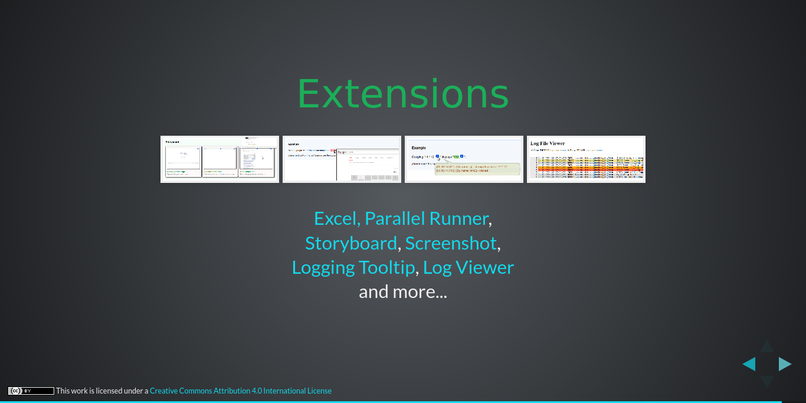

| Row | Level | Message | Time | File Of Caller | Line Of Caller |
|---|---|---|---|---|---|
| 1. | INFO | Starting example concordion-presentation for test fixture example.concordion.ConcordionPresentationFixture | 09:41:09.808 | CubanoDemoFixtureLogger.java | 15 |
| 2. | DEBUG | Starting browser | 09:41:09.812 | Browser.java | 153 |
| 3. | DEBUG | Resolution firefox=89 in cache (valid until 10:40:32 01/07/2021 UTC) | 09:41:09.821 | ResolutionCache.java | 187 |
| 4. | DEBUG | Resolution firefox89=0.29.0 in cache (valid until 09:40:32 02/07/2021 UTC) | 09:41:09.822 | ResolutionCache.java | 187 |
| 5. | INFO | Using geckodriver 0.29.0 (resolved driver for Firefox 89) | 09:41:09.823 | WebDriverManager.java | 632 |
| 6. | TRACE | Checking if geckodriver exists in cache | 09:41:09.825 | CacheHandler.java | 88 |
| 7. | TRACE | Filter cache by geckodriver -- input list [/home/runner/.cache/selenium/chromedriver/linux64/91.0.4472.101/chromedriver, /home/runner/.cache/selenium/geckodriver/linux64/0.29.0/geckodriver, /home/runner/.cache/selenium/resolution.properties] -- output list [/home/runner/.cache/selenium/geckodriver/linux64/0.29.0/geckodriver] | 09:41:09.828 | CacheHandler.java | 73 |
| 8. | TRACE | Filter cache by 0.29.0 -- input list [/home/runner/.cache/selenium/geckodriver/linux64/0.29.0/geckodriver] -- output list [/home/runner/.cache/selenium/geckodriver/linux64/0.29.0/geckodriver] | 09:41:09.828 | CacheHandler.java | 73 |
| 9. | TRACE | Filter cache by LINUX -- input list [/home/runner/.cache/selenium/geckodriver/linux64/0.29.0/geckodriver] -- output list [/home/runner/.cache/selenium/geckodriver/linux64/0.29.0/geckodriver] | 09:41:09.828 | CacheHandler.java | 73 |
| 10. | DEBUG | Driver geckodriver 0.29.0 found in cache | 09:41:09.829 | WebDriverManager.java | 588 |
| 11. | INFO | Exporting webdriver.gecko.driver as /home/runner/.cache/selenium/geckodriver/linux64/0.29.0/geckodriver | 09:41:09.829 | WebDriverManager.java | 689 |
| 12. | DEBUG | Navigating to ⇒ https://concordion.org/presentations/2017-04-Concordion-2.0/#/ | 09:41:12.033 | TestWorker.java | 121 |
| 13. Page Object: ConcordionPresentationPage | |||||
| 14. | DEBUG | Wait for any ajax requests to complete | 09:41:13.869 | PageObject.java | 40 |
| 15. | TRACE | Run JavaScript ⇒ | 09:41:13.912 | TestWorker.java | 121 |
|
|
|||||
| 16. | TRACE | Run JavaScript ⇒ | 09:41:13.923 | TestWorker.java | 121 |
|
|
|||||
| 17. | TRACE | Find element ⇒ By.className: Spinner | 09:41:13.928 | TestWorker.java | 121 |
| 18. | DEBUG | Checking ConcordionPresentationPage loads within 10 seconds | 09:41:13.938 | ActionTimer.java | 63 |
| 19. | TRACE | Find element ⇒ By.xpath: //a[text() = '@nigel_charman'] | 09:41:13.939 | TestWorker.java | 121 |
| 20. | TRACE | ConcordionPresentationPage loaded in 0 seconds Current url: https://concordion.org/presentations/2017-04-Concordion-2.0/#/ |
09:41:14.038 | PageObject.java | 55 |
| 21. | TRACE | Find element ⇒ By.className: navigate-right | 09:41:14.039 | TestWorker.java | 121 |
| 22. | DEBUG | Clicking '' | 09:41:14.317 | ConcordionPresentationPage.java | 36 |
| 23. | DEBUG | Navigating to ⇒ https://concordion.org/presentations/2017-04-Concordion-2.0/#/2 | 09:41:14.318 | TestWorker.java | 121 |
| 24. Page Object: ConcordionIsATestRunnerPage | |||||
| 25. | DEBUG | Wait for any ajax requests to complete | 09:41:14.343 | PageObject.java | 40 |
| 26. | TRACE | Run JavaScript ⇒ | 09:41:14.371 | TestWorker.java | 121 |
|
|
|||||
| 27. | TRACE | Run JavaScript ⇒ | 09:41:14.377 | TestWorker.java | 121 |
|
|
|||||
| 28. | TRACE | Find element ⇒ By.className: Spinner | 09:41:14.387 | TestWorker.java | 121 |
| 29. | DEBUG | Checking ConcordionIsATestRunnerPage loads within 10 seconds | 09:41:14.392 | ActionTimer.java | 63 |
| 30. | TRACE | Find element ⇒ By.xpath: //h3[text()='Concordion is a test runner'] | 09:41:14.398 | TestWorker.java | 121 |
| 31. | TRACE | Find element ⇒ By.className: navigate-right | 09:41:14.470 | TestWorker.java | 121 |
| 32. | TRACE | Find element ⇒ By.xpath: //a[text() = '@nigel_charman'] | 09:41:14.558 | TestWorker.java | 121 |
| 33. | TRACE | ConcordionIsATestRunnerPage loaded in 0 seconds Current url: https://concordion.org/presentations/2017-04-Concordion-2.0/#/2 |
09:41:14.630 | PageObject.java | 55 |
| 34. | TRACE | Find element ⇒ By.className: navigate-right | 09:41:14.631 | TestWorker.java | 121 |
| 35. | DEBUG | Clicking '' | 09:41:14.882 | ConcordionIsATestRunnerPage.java | 36 |
| 36. | DEBUG | Click ⇒ By.class name: navigate-right | 09:41:14.889 | TestWorker.java | 121 |
| 37. Page Object: ConcordionForExecutableSpecsPage | |||||
| 38. | DEBUG | Wait for any ajax requests to complete | 09:41:15.113 | PageObject.java | 40 |
| 39. | TRACE | Run JavaScript ⇒ | 09:41:15.128 | TestWorker.java | 121 |
|
|
|||||
| 40. | TRACE | Run JavaScript ⇒ | 09:41:15.141 | TestWorker.java | 121 |
|
|
|||||
| 41. | TRACE | Find element ⇒ By.className: Spinner | 09:41:15.147 | TestWorker.java | 121 |
| 42. | DEBUG | Checking ConcordionForExecutableSpecsPage loads within 10 seconds | 09:41:15.153 | ActionTimer.java | 63 |
| 43. | TRACE | Find element ⇒ By.xpath: //h3[text()='Concordion is a test runner'] | 09:41:15.154 | TestWorker.java | 121 |
| 44. | TRACE | Find element ⇒ By.xpath: //span[text()='for executable specifications'] | 09:41:15.221 | TestWorker.java | 121 |
| 45. | TRACE | ConcordionForExecutableSpecsPage loaded in 0 seconds Current url: https://concordion.org/presentations/2017-04-Concordion-2.0/#/2 |
09:41:15.293 | PageObject.java | 55 |
| 46. | TRACE | Find element ⇒ By.className: navigate-right | 09:41:15.294 | TestWorker.java | 121 |
| 47. | DEBUG | Clicking '' | 09:41:15.525 | ConcordionForExecutableSpecsPage.java | 36 |
|  | |||||
| 48. | DEBUG | Click ⇒ By.class name: navigate-right | 09:41:15.537 | TestWorker.java | 121 |
| 49. Page Object: ConcordionBeautifulLivingDocsPage | |||||
| 50. | DEBUG | Wait for any ajax requests to complete | 09:41:15.754 | PageObject.java | 40 |
| 51. | TRACE | Run JavaScript ⇒ | 09:41:15.780 | TestWorker.java | 121 |
|
|
|||||
| 52. | TRACE | Run JavaScript ⇒ | 09:41:15.792 | TestWorker.java | 121 |
|
|
|||||
| 53. | TRACE | Find element ⇒ By.className: Spinner | 09:41:15.798 | TestWorker.java | 121 |
| 54. | DEBUG | Checking ConcordionBeautifulLivingDocsPage loads within 10 seconds | 09:41:15.804 | ActionTimer.java | 63 |
| 55. | TRACE | Find element ⇒ By.xpath: //h3[text()='Concordion is a test runner'] | 09:41:15.805 | TestWorker.java | 121 |
| 56. | TRACE | Find element ⇒ By.xpath: //span[text()='for executable specifications'] | 09:41:15.877 | TestWorker.java | 121 |
| 57. | TRACE | Find element ⇒ By.xpath: //span[text()='that creates beautiful living documentation'] | 09:41:15.946 | TestWorker.java | 121 |
| 58. | TRACE | ConcordionBeautifulLivingDocsPage loaded in 0 seconds Current url: https://concordion.org/presentations/2017-04-Concordion-2.0/#/2 |
09:41:16.016 | PageObject.java | 55 |
| 59. | TRACE | Find element ⇒ By.className: navigate-right | 09:41:16.017 | TestWorker.java | 121 |
| 60. | DEBUG | Clicking '' | 09:41:16.270 | ConcordionBeautifulLivingDocsPage.java | 41 |
|  | |||||
| 61. | DEBUG | Navigating to ⇒ https://concordion.org/presentations/2017-04-Concordion-2.0/#/5 | 09:41:16.271 | TestWorker.java | 121 |
| 62. Page Object: ConcordionHowItWorksPage | |||||
| 63. | DEBUG | Wait for any ajax requests to complete | 09:41:16.327 | PageObject.java | 40 |
| 64. | TRACE | Run JavaScript ⇒ | 09:41:16.367 | TestWorker.java | 121 |
|
|
|||||
| 65. | TRACE | Run JavaScript ⇒ | 09:41:16.385 | TestWorker.java | 121 |
|
|
|||||
| 66. | TRACE | Find element ⇒ By.className: Spinner | 09:41:16.394 | TestWorker.java | 121 |
| 67. | DEBUG | Checking ConcordionHowItWorksPage loads within 10 seconds | 09:41:16.401 | ActionTimer.java | 63 |
| 68. | TRACE | Find element ⇒ By.xpath: //h2[text()='How it works'] | 09:41:16.402 | TestWorker.java | 121 |
| 69. | TRACE | Find element ⇒ By.className: navigate-right | 09:41:16.479 | TestWorker.java | 121 |
| 70. | TRACE | Find element ⇒ By.xpath: //h3[text()='Downloads'] | 09:41:16.572 | TestWorker.java | 121 |
| 71. | TRACE | ConcordionHowItWorksPage loaded in 0 seconds Current url: https://concordion.org/presentations/2017-04-Concordion-2.0/#/5 |
09:41:16.645 | PageObject.java | 55 |
| 72. | TRACE | Find element ⇒ By.className: navigate-right | 09:41:16.648 | TestWorker.java | 121 |
| 73. | DEBUG | Clicking '' | 09:41:16.928 | ConcordionHowItWorksPage.java | 37 |
|  | |||||
| 74. | DEBUG | Click ⇒ By.class name: navigate-right | 09:41:16.940 | TestWorker.java | 121 |
| 75. Page Object: ConcordionSpecificationPage | |||||
| 76. | DEBUG | Wait for any ajax requests to complete | 09:41:16.990 | PageObject.java | 40 |
| 77. | TRACE | Run JavaScript ⇒ | 09:41:17.005 | TestWorker.java | 121 |
|
|
|||||
| 78. | TRACE | Run JavaScript ⇒ | 09:41:17.014 | TestWorker.java | 121 |
|
|
|||||
| 79. | TRACE | Find element ⇒ By.className: Spinner | 09:41:17.021 | TestWorker.java | 121 |
| 80. | DEBUG | Checking ConcordionSpecificationPage loads within 10 seconds | 09:41:17.028 | ActionTimer.java | 63 |
| 81. | TRACE | Find element ⇒ By.xpath: //h1[text()='Specification'] | 09:41:17.029 | TestWorker.java | 121 |
| 82. | TRACE | Find element ⇒ By.className: navigate-right | 09:41:17.106 | TestWorker.java | 121 |
| 83. | TRACE | Find element ⇒ By.xpath: //h2[text()='How it works'] | 09:41:17.198 | TestWorker.java | 121 |
| 84. | TRACE | ConcordionSpecificationPage loaded in 0 seconds Current url: https://concordion.org/presentations/2017-04-Concordion-2.0/#/6 |
09:41:17.838 | PageObject.java | 55 |
| 85. | TRACE | Find element ⇒ By.className: navigate-right | 09:41:17.839 | TestWorker.java | 121 |
| 86. | DEBUG | Clicking '' | 09:41:18.083 | ConcordionSpecificationPage.java | 37 |
|  | |||||
| 87. | DEBUG | Click ⇒ By.class name: navigate-right | 09:41:18.089 | TestWorker.java | 121 |
| 88. Page Object: ConcordionInstrumentationPage | |||||
| 89. | DEBUG | Wait for any ajax requests to complete | 09:41:18.131 | PageObject.java | 40 |
| 90. | TRACE | Run JavaScript ⇒ | 09:41:18.155 | TestWorker.java | 121 |
|
|
|||||
| 91. | TRACE | Run JavaScript ⇒ | 09:41:18.164 | TestWorker.java | 121 |
|
|
|||||
| 92. | TRACE | Find element ⇒ By.className: Spinner | 09:41:18.178 | TestWorker.java | 121 |
| 93. | DEBUG | Checking ConcordionInstrumentationPage loads within 10 seconds | 09:41:18.201 | ActionTimer.java | 63 |
| 94. | TRACE | Find element ⇒ By.xpath: //h1[text()='Instrumentation'] | 09:41:18.201 | TestWorker.java | 121 |
| 95. | TRACE | Find element ⇒ By.className: navigate-right | 09:41:18.276 | TestWorker.java | 121 |
| 96. | TRACE | Find element ⇒ By.xpath: //h1[text()='Specification'] | 09:41:18.369 | TestWorker.java | 121 |
| 97. | TRACE | ConcordionInstrumentationPage loaded in 0 seconds Current url: https://concordion.org/presentations/2017-04-Concordion-2.0/#/7 |
09:41:19.017 | PageObject.java | 55 |
| 98. | TRACE | Find element ⇒ By.className: navigate-right | 09:41:19.018 | TestWorker.java | 121 |
| 99. | DEBUG | Clicking '' | 09:41:19.301 | ConcordionInstrumentationPage.java | 37 |
|  | |||||
| 100. | DEBUG | Click ⇒ By.class name: navigate-right | 09:41:19.311 | TestWorker.java | 121 |
| 101. Page Object: ConcordionFixturePage | |||||
| 102. | DEBUG | Wait for any ajax requests to complete | 09:41:19.355 | PageObject.java | 40 |
| 103. | TRACE | Run JavaScript ⇒ | 09:41:19.365 | TestWorker.java | 121 |
|
|
|||||
| 104. | TRACE | Run JavaScript ⇒ | 09:41:19.372 | TestWorker.java | 121 |
|
|
|||||
| 105. | TRACE | Find element ⇒ By.className: Spinner | 09:41:19.377 | TestWorker.java | 121 |
| 106. | DEBUG | Checking ConcordionFixturePage loads within 10 seconds | 09:41:19.383 | ActionTimer.java | 63 |
| 107. | TRACE | Find element ⇒ By.xpath: //h1[text()='Fixture'] | 09:41:19.384 | TestWorker.java | 121 |
| 108. | TRACE | Find element ⇒ By.className: navigate-right | 09:41:19.465 | TestWorker.java | 121 |
| 109. | TRACE | Find element ⇒ By.xpath: //h1[text()='Instrumentation'] | 09:41:19.555 | TestWorker.java | 121 |
| 110. | TRACE | ConcordionFixturePage loaded in 0 seconds Current url: https://concordion.org/presentations/2017-04-Concordion-2.0/#/8 |
09:41:20.193 | PageObject.java | 55 |
| 111. | TRACE | Find element ⇒ By.className: navigate-right | 09:41:20.194 | TestWorker.java | 121 |
| 112. | DEBUG | Clicking '' | 09:41:20.457 | ConcordionFixturePage.java | 37 |
|  | |||||
| 113. | DEBUG | Click ⇒ By.class name: navigate-right | 09:41:20.467 | TestWorker.java | 121 |
| 114. Page Object: ConcordionSUTPage | |||||
| 115. | DEBUG | Wait for any ajax requests to complete | 09:41:20.505 | PageObject.java | 40 |
| 116. | TRACE | Run JavaScript ⇒ | 09:41:20.518 | TestWorker.java | 121 |
|
|
|||||
| 117. | TRACE | Run JavaScript ⇒ | 09:41:20.523 | TestWorker.java | 121 |
|
|
|||||
| 118. | TRACE | Find element ⇒ By.className: Spinner | 09:41:20.528 | TestWorker.java | 121 |
| 119. | DEBUG | Checking ConcordionSUTPage loads within 10 seconds | 09:41:20.536 | ActionTimer.java | 63 |
| 120. | TRACE | Find element ⇒ By.xpath: //h2[text()='System under Test'] | 09:41:20.537 | TestWorker.java | 121 |
| 121. | TRACE | Find element ⇒ By.className: navigate-right | 09:41:20.618 | TestWorker.java | 121 |
| 122. | TRACE | Find element ⇒ By.xpath: //h1[text()='Fixture'] | 09:41:20.661 | TestWorker.java | 121 |
| 123. | TRACE | ConcordionSUTPage loaded in 0 seconds Current url: https://concordion.org/presentations/2017-04-Concordion-2.0/#/9 |
09:41:21.303 | PageObject.java | 55 |
| 124. | TRACE | Find element ⇒ By.className: navigate-right | 09:41:21.303 | TestWorker.java | 121 |
| 125. | DEBUG | Clicking '' | 09:41:21.553 | ConcordionSUTPage.java | 38 |
|  | |||||
| 126. | DEBUG | Navigating to ⇒ https://concordion.org/presentations/2017-04-Concordion-2.0/#/12 | 09:41:21.557 | TestWorker.java | 121 |
| 127. Page Object: ConcordionComparisonPage | |||||
| 128. | DEBUG | Wait for any ajax requests to complete | 09:41:21.579 | PageObject.java | 40 |
| 129. | TRACE | Run JavaScript ⇒ | 09:41:21.612 | TestWorker.java | 121 |
|
|
|||||
| 130. | TRACE | Run JavaScript ⇒ | 09:41:21.624 | TestWorker.java | 121 |
|
|
|||||
| 131. | TRACE | Find element ⇒ By.className: Spinner | 09:41:21.633 | TestWorker.java | 121 |
| 132. | DEBUG | Checking ConcordionComparisonPage loads within 10 seconds | 09:41:21.645 | ActionTimer.java | 63 |
| 133. | TRACE | Find element ⇒ By.xpath: //h2[text()='Comparison'] | 09:41:21.645 | TestWorker.java | 121 |
| 134. | TRACE | Find element ⇒ By.className: navigate-right | 09:41:21.719 | TestWorker.java | 121 |
| 135. | TRACE | Find element ⇒ By.xpath: //h2[text()='System under Test'] | 09:41:21.794 | TestWorker.java | 121 |
| 136. | TRACE | ConcordionComparisonPage loaded in 0 seconds Current url: https://concordion.org/presentations/2017-04-Concordion-2.0/#/12 |
09:41:21.865 | PageObject.java | 55 |
| 137. | TRACE | Find element ⇒ By.className: navigate-right | 09:41:21.866 | TestWorker.java | 121 |
| 138. | DEBUG | Click ⇒ By.class name: navigate-right | 09:41:21.871 | TestWorker.java | 121 |
| 139. | DEBUG | Click ⇒ By.class name: navigate-right | 09:41:22.090 | TestWorker.java | 121 |
| 140. | DEBUG | Click ⇒ By.class name: navigate-right | 09:41:22.311 | TestWorker.java | 121 |
| 141. | DEBUG | Click ⇒ By.class name: navigate-right | 09:41:22.546 | TestWorker.java | 121 |
| 142. | DEBUG | Click ⇒ By.class name: navigate-right | 09:41:22.775 | TestWorker.java | 121 |
| 143. | DEBUG | Click ⇒ By.class name: navigate-right | 09:41:22.995 | TestWorker.java | 121 |
| 144. | DEBUG | Click ⇒ By.class name: navigate-right | 09:41:23.213 | TestWorker.java | 121 |
| 145. | DEBUG | Click ⇒ By.class name: navigate-right | 09:41:23.430 | TestWorker.java | 121 |
| 146. | DEBUG | Clicking '' | 09:41:23.868 | ConcordionComparisonPage.java | 47 |
|  | |||||
| 147. | DEBUG | Click ⇒ By.class name: navigate-right | 09:41:23.873 | TestWorker.java | 121 |
| 148. Page Object: ConcordionExtensionsPage | |||||
| 149. | DEBUG | Wait for any ajax requests to complete | 09:41:23.905 | PageObject.java | 40 |
| 150. | TRACE | Run JavaScript ⇒ | 09:41:23.925 | TestWorker.java | 121 |
|
|
|||||
| 151. | TRACE | Run JavaScript ⇒ | 09:41:23.931 | TestWorker.java | 121 |
|
|
|||||
| 152. | TRACE | Find element ⇒ By.className: Spinner | 09:41:23.940 | TestWorker.java | 121 |
| 153. | DEBUG | Checking ConcordionExtensionsPage loads within 10 seconds | 09:41:23.947 | ActionTimer.java | 63 |
| 154. | TRACE | Find element ⇒ By.xpath: //h2[text()='Extensions'] | 09:41:23.948 | TestWorker.java | 121 |
| 155. | TRACE | Find element ⇒ By.className: navigate-right | 09:41:24.014 | TestWorker.java | 121 |
| 156. | TRACE | Find element ⇒ By.xpath: //h2[text()='Comparison'] | 09:41:24.093 | TestWorker.java | 121 |
| 157. | TRACE | ConcordionExtensionsPage loaded in 0 seconds Current url: https://concordion.org/presentations/2017-04-Concordion-2.0/#/13 |
09:41:24.750 | PageObject.java | 55 |
| 158. | TRACE | Find element ⇒ By.className: navigate-right | 09:41:24.751 | TestWorker.java | 121 |
| 159. | DEBUG | Clicking '' | 09:41:24.973 | ConcordionExtensionsPage.java | 36 |
|  | |||||
| 160. | DEBUG | Click ⇒ By.class name: navigate-right | 09:41:24.992 | TestWorker.java | 121 |
| 161. Page Object: ConcordionLearnMorePage | |||||
| 162. | DEBUG | Wait for any ajax requests to complete | 09:41:25.029 | PageObject.java | 40 |
| 163. | TRACE | Run JavaScript ⇒ | 09:41:25.046 | TestWorker.java | 121 |
|
|
|||||
| 164. | TRACE | Run JavaScript ⇒ | 09:41:25.069 | TestWorker.java | 121 |
|
|
|||||
| 165. | TRACE | Find element ⇒ By.className: Spinner | 09:41:25.075 | TestWorker.java | 121 |
| 166. | DEBUG | Checking ConcordionLearnMorePage loads within 10 seconds | 09:41:25.095 | ActionTimer.java | 63 |
| 167. | TRACE | Find element ⇒ By.xpath: //h2[text()='Learn more'] | 09:41:25.095 | TestWorker.java | 121 |
| 168. | TRACE | Find element ⇒ By.className: navigate-right | 09:41:25.137 | TestWorker.java | 121 |
| 169. | TRACE | Find element ⇒ By.xpath: //h2[text()='Extensions'] | 09:41:25.225 | TestWorker.java | 121 |
| 170. | TRACE | ConcordionLearnMorePage loaded in 0 seconds Current url: https://concordion.org/presentations/2017-04-Concordion-2.0/#/14 |
09:41:25.878 | PageObject.java | 55 |
| 171. | INFO | Finishing example concordion-presentation | 09:41:25.879 | CubanoDemoFixtureLogger.java | 20 |
{kind=link}
{kind=link}
{kind=link}
{kind=link}
{kind=link}
{kind=link}
{kind=link}
{kind=link}
{kind=link}
{kind=link}
{kind=link}